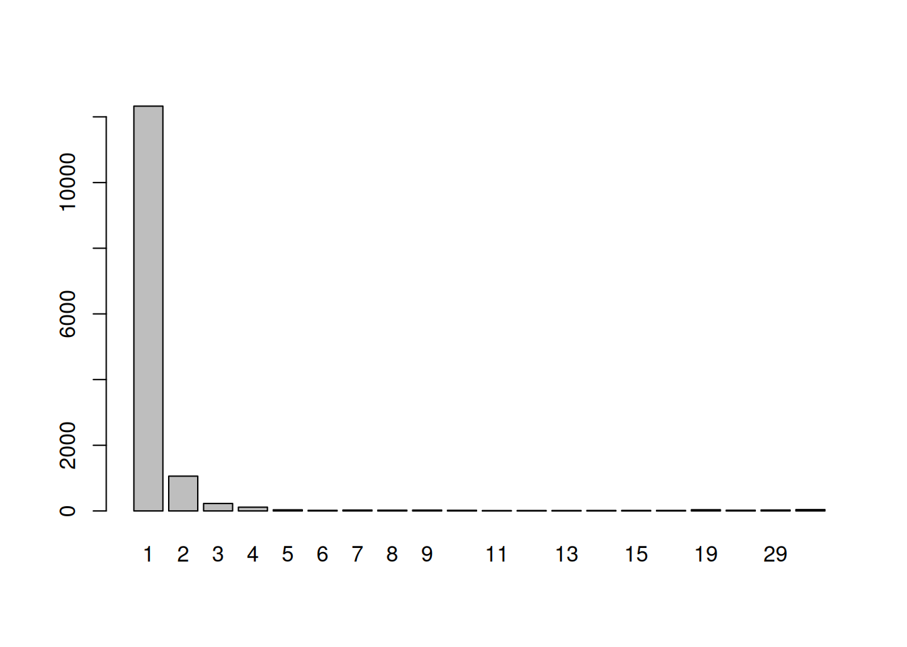
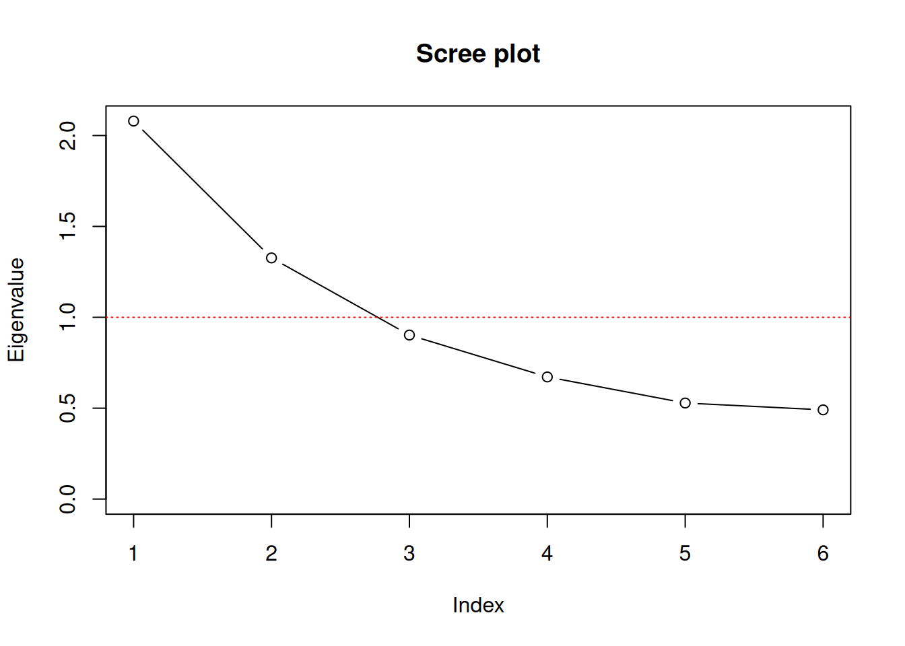
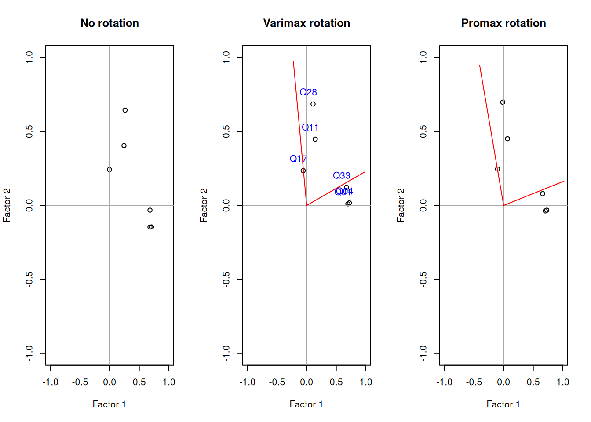

Chapter 11 Factor Analysis
Statistically speaking the main goal of factor analysis is to describe the covariance structure among many variables in terms of a few underlying, but unobservable random quantities, called factors. This usually happens by assuming that the supposed variables can be organized into (contextually meaningful) groups. The variables in a given group are assumed to be highly correlated and thus represent or are related to a latent construct. While the correlation within a group of variables is high, the correlation between different groups should be low. Following that argumentation it may be possible to condense the information from multiple observed variables within a group into a single unobserved factor variable. While Explanatory Factor Analysis (EFA) aims at finding the mentioned groups Confirmatory Factor Analysis (CFA) aims at confirming an a priori hypothesized variable grouping constellation.
While EFA and CFA serve different purposes when doing research, their foundation, especially the model formulation, the estimation and the derivation of quantities of interest is highly comparable and will be presented below.
11.1 Foundations
\[ X_1 - \mu_1 = l_{11} F_1 + l_{12} F_2 + \ldots + l_{1m} F_m + \epsilon_1 \\ X_2 - \mu_2 = l_{21} F_1 + l_{22} F_2 + \ldots + l_{2m} F_m + \epsilon_2 \\ \vdots \\ X_p - \mu_p = l_{p1} F_1 + l_{p2} F_2 + \ldots + l_{pm} F_m + \epsilon_p \] Although the equations above seem to be related to multiple regression equations the fact that all quantities on the right hand side are unobseved (in fact only \(X\) is observed) distinguishes this factor model from regression problems. The factor analysis model can also be written in matrix notation, which allows for easier derivation of some of the following procedures and thus should be considered valuable as well.
\[ \underset{p \times 1}{\boldsymbol X} = \underset{p \times 1}{\boldsymbol \mu} + \underset{p \times m}{\boldsymbol L} \; \underset{m \times p}{\boldsymbol F} + \underset{p \times 1}{\boldsymbol \epsilon} \]
\[ \underset{p \times 1}{\boldsymbol X - \boldsymbol \mu} = \underset{p \times m}{\boldsymbol L} \; \underset{m \times p}{\boldsymbol F} + \underset{p \times 1}{\boldsymbol \epsilon} \]
\[ \boldsymbol \Sigma = Cov(\boldsymbol X) = \underset{\;\\Communality}{\boldsymbol L \boldsymbol L^T} + \underset{\;\\Uniqueness}{\boldsymbol \Psi} \]
11.4 Basic Factor Analysis in R
11.4.1 Data Preparation and Description
Lets get our hands dirty and apply what we learned. The following code loads some data that results from a questionnaire with 50 questions.
q <- readRDS("data/fa_questions.rds") # Questions asked
d <- readRDS("data/fa_sample.rds") # Response data
# Alternatively data can be downloaded
#q <- readRDS(gzcon(url("https://bchwtz.de/lfs/fa_questions.rds")))
#d <- readRDS(gzcon(url("https://bchwtz.de/lfs/fa_sample.rds")))The variable q contains the questions from the questionnaire (50 items) while d contains the actual responses. Respondents hat the option to answer each question using a 5-point Likert-Scale, that was labeled 1=Disagree, 3=Neutral, 5=Agree. However, the data is not pre-processed and needs to be thoroughly investigated and potentially cleaned up before it can be used for analytic procedures.
head(q, n=6) # Show first 6 rows from the dataframe## Q coding question
## 1 Q01 P I feel comfortable around people.
## 2 Q02 P I have excellent ideas.
## 3 Q03 N I insult people.
## 4 Q04 P I am the life of the party.
## 5 Q05 N I do not have a good imagination.
## 6 Q06 P I sympathize with others' feelings.The object q contains three variables (columns), the question ID Q, an indication if the question is positively (coding == "P") or negatively (coding == "N") formulated and the actual formulation of the item question. The responses are saved in object d and the following code snipped shows the first six observations (rows) for the rist five variables Q01 to Q05 (columns).
head(d[ ,1:5], n=6)## Q01 Q02 Q03 Q04 Q05
## 1 3 4 1 2 2
## 2 3 3 3 4 4
## 3 4 4 2 3 2
## 4 3 4 2 1 2
## 5 1 5 3 1 1
## 6 4 3 2 1 3dim(d) # Dimensions of the data matrix## [1] 14095 53All 50 Items - Click to expand!
library(kableExtra)
kable_paper(kbl(q), "hover", full_width = F)| Q | coding | question |
|---|---|---|
| Q01 | P | I feel comfortable around people. |
| Q02 | P | I have excellent ideas. |
| Q03 | N | I insult people. |
| Q04 | P | I am the life of the party. |
| Q05 | N | I do not have a good imagination. |
| Q06 | P | I sympathize with others’ feelings. |
| Q07 | P | I worry about things. |
| Q08 | P | I pay attention to details. |
| Q09 | N | I seldom feel blue. |
| Q10 | N | I am relaxed most of the time. |
| Q11 | P | I am quick to understand things. |
| Q12 | P | I get irritated easily. |
| Q13 | N | I have difficulty understanding abstract ideas. |
| Q14 | P | I talk to a lot of different people at parties. |
| Q15 | P | I am easily disturbed. |
| Q16 | N | I am not interested in abstract ideas. |
| Q17 | P | I spend time reflecting on things. |
| Q18 | N | I don’t like to draw attention to myself. |
| Q19 | N | I shirk my duties. |
| Q20 | P | I am interested in people. |
| Q21 | N | I am quiet around strangers. |
| Q22 | P | I make people feel at ease. |
| Q23 | P | I start conversations. |
| Q24 | N | I leave my belongings around. |
| Q25 | P | I change my mood a lot. |
| Q26 | P | I have a soft heart. |
| Q27 | N | I am not really interested in others. |
| Q28 | P | I have a rich vocabulary. |
| Q29 | P | I feel others’ emotions. |
| Q30 | P | I am full of ideas. |
| Q31 | P | I take time out for others. |
| Q32 | P | I am always prepared. |
| Q33 | P | I don’t mind being the center of attention. |
| Q34 | N | I keep in the background. |
| Q35 | N | I make a mess of things. |
| Q36 | P | I often feel blue. |
| Q37 | P | I get chores done right away. |
| Q38 | N | I often forget to put things back in their proper place. |
| Q39 | N | I don’t talk a lot. |
| Q40 | P | I get upset easily. |
| Q41 | P | I get stressed out easily. |
| Q42 | P | I follow a schedule. |
| Q43 | N | I have little to say. |
| Q44 | P | I have a vivid imagination. |
| Q45 | P | I like order. |
| Q46 | P | I am exacting in my work. |
| Q47 | P | I have frequent mood swings. |
| Q48 | N | I feel little concern for others. |
| Q49 | N | I am not interested in other people’s problems. |
| Q50 | P | I use difficult words. |
In total we have 14095 observations and 53 variables in the dataframe. The first 50 columns represent the responses to the items introduced above. The remaining three variables (IPC, testelapse, country) provide metadata and some technical information, which can be used to perform plausibility checks and cleanup the data.
IPC: Is an abbreviation for IP (Internet Protocol Address) Count and lists the number of records from the user’s IP address in the dataset. For max cleanliness is is recommended to only use records where this value is 1. It should, however, be noted that high values can have multiple causes and do no necessarily represent abusive usage of the survey service. They can be because of shared networks (e.g. entire universities) or multiple submissions.testelapse: Is the time in seconds spent on the page with the survey questions.country: Indicates the country of the respondet, but is determined by technical information and was not asked as a question, thus may be inaccurate.
summary(d$testelapse)## Min. 1st Qu. Median Mean 3rd Qu. Max. NA's
## 2.0 182.0 238.0 565.9 327.0 699842.0 11The descriptive statistics for the testelapse variable shows that on average respondents spent 565.91 seconds for answering the questions. 50% of the responses took longer than 238 seconds. However the fastest respondent only used the questionnaire for 2 seconds, while the longest response took 6.99842^{5} seconds ( = 194.4 hours). Additionally 11 observations contain not value (NA) for the testelapse variable.
table(d$IPC)##
## 1 2 3 4 5 6 7 8 9 10 11 12 13
## 12327 1060 228 116 35 18 28 24 27 20 11 12 13
## 14 15 16 19 22 29 42
## 14 15 16 38 22 29 42barplot(table(d$IPC))
When looking at the IPC variable using the raw numbers or the barplot above, we can see that most responses originated from a unique IP address, while there are fewer IPs that contributed multiple entries. However, there also seem to be some larger networks or abusive users that contribute multiple observations with the maximum being 42 from a single IP.
The following output shows the descriptive statistics for the first five variables (Q01-Q05). As the responses were collected using a 5-point Likert-Scale the minimum for each variable is 1 and the maximum 5. The remaining values variate nicely and are all within a reasonable range. However, it becomes quickly visible that some respondents have not answered all questions as, each variable contains NA values.
t(sapply(d[ , 1:5], summary))## Min. 1st Qu. Median Mean 3rd Qu. Max. NA's
## Q01 1 2 3 3.112902 4 5 74
## Q02 1 3 4 3.826643 5 5 95
## Q03 1 1 2 2.258131 3 5 75
## Q04 1 1 2 2.422241 3 5 58
## Q05 1 1 1 1.806505 2 5 105All 50 Descriptive Statistics - Click to expand!
t(sapply(d[ , 1:50], summary))## Min. 1st Qu. Median Mean 3rd Qu. Max. NA's
## Q01 1 2 3 3.112902 4 5 74
## Q02 1 3 4 3.826643 5 5 95
## Q03 1 1 2 2.258131 3 5 75
## Q04 1 1 2 2.422241 3 5 58
## Q05 1 1 1 1.806505 2 5 105
## Q06 1 3 4 3.735872 5 5 98
## Q07 1 3 4 3.863215 5 5 73
## Q08 1 3 4 3.980040 5 5 67
## Q09 1 2 3 2.678594 3 5 122
## Q10 1 2 3 3.245885 4 5 121
## Q11 1 4 4 4.205275 5 5 104
## Q12 1 2 3 2.866543 4 5 83
## Q13 1 1 1 1.736891 2 5 78
## Q14 1 1 2 2.584571 4 5 95
## Q15 1 2 3 2.961187 4 5 79
## Q16 1 1 1 1.684976 2 5 77
## Q17 1 4 5 4.350989 5 5 86
## Q18 1 2 3 3.338186 4 5 82
## Q19 1 2 3 2.834609 4 5 116
## Q20 1 3 4 3.717094 5 5 108
## Q21 1 3 4 3.577911 5 5 79
## Q22 1 3 3 3.427735 4 5 98
## Q23 1 2 3 3.086428 4 5 118
## Q24 1 2 3 3.052744 4 5 84
## Q25 1 2 3 2.943228 4 5 74
## Q26 1 3 4 3.594600 4 5 131
## Q27 1 1 2 2.353692 3 5 80
## Q28 1 4 4 4.065685 5 5 104
## Q29 1 3 4 3.632751 5 5 80
## Q30 1 3 4 3.997788 5 5 80
## Q31 1 3 4 3.548620 4 5 109
## Q32 1 2 3 3.244288 4 5 132
## Q33 1 2 3 2.970972 4 5 74
## Q34 1 2 3 3.283737 4 5 82
## Q35 1 2 3 2.714255 4 5 93
## Q36 1 2 3 2.917803 4 5 92
## Q37 1 1 2 2.428091 3 5 105
## Q38 1 2 3 2.915745 4 5 78
## Q39 1 2 3 2.895371 4 5 74
## Q40 1 2 3 2.794387 4 5 127
## Q41 1 2 3 3.025846 4 5 89
## Q42 1 2 3 2.898957 4 5 101
## Q43 1 1 2 2.341183 3 5 82
## Q44 1 4 4 4.163857 5 5 95
## Q45 1 3 4 3.598687 4 5 86
## Q46 1 3 4 3.635492 4 5 120
## Q47 1 2 3 2.711643 4 5 95
## Q48 1 1 2 2.429407 3 5 71
## Q49 1 1 2 2.353584 3 5 87
## Q50 1 3 4 3.655848 5 5 107Lets have a detailed look at Q01, which was formulated as shown below. Once again the scale meant the following: 1=Disagree, 3=Neutral, 5=Agree.
q[q$Q == "Q01", ]## Q coding question
## 1 Q01 P I feel comfortable around people.Deep diving into the descriptive statistics and actual responses for the variable Q01 shows, that the value of the first quartile is 2, meaning that 25% or more of the respondents answered with either value 1 or 2 (the code below shows the frequencies and exact proportions). In total 32.62% disagree (at least lightly) with the item and do not feel comfortable around people. On the other side 39.27% somehow agree to the statement and have no worse feelings when being in a group of people. However, 28% of the respondents say that they feel neutral (no agreement or disagreement with the item) when in groups. Additionally 74 people have not answered Q01.
tab <- as.vector(table(d[,1]))
q01_details <- data.frame(value = 1:5,
freq = tab,
prop = tab/sum(tab))
q01_details$cumprop <- cumsum(q01_details$prop)
round(q01_details, digits=4)## value freq prop cumprop
## 1 1 1207 0.0861 0.0861
## 2 2 3367 0.2401 0.3262
## 3 3 3926 0.2800 0.6062
## 4 4 3678 0.2623 0.8686
## 5 5 1843 0.1314 1.0000Before we start the analysis we are going to clean up the dataset based on the insights we gained in our descriptive analysis so far. The draw reliable conclusions we want the dataset as clean as possible, which is the rationale behind the following guidelines:
We want to ensure that respondents spent a reasonable amount of time when answering the questionnaire. We expect fast impulsive respondents to spent at least 2 seconds for every questions (thus 100 seconds in total) and not more than one hour for all questions (thus 3600 seconds).
We want to be sure that every natural person only contributes one observation to the dataset, which we will ensure by only considering lines where the
IPCvariable has the value1.We do not want missing observations in the sense of unanswered questions (
NAvalues) in the dataset, but only consider responses that answered all questions from the questionnaire.
# 1) Remove rows with unreasonable response times
d_cleaned <- d[d$testelapse >= 100 & d$testelapse <= 3600, ]
# 2) Remove responses from non unique IPs
d_cleaned <- d_cleaned[d_cleaned$IPC == 1, ]
# 3) Remove rows with missing (NA) values.
d_cleaned <- na.omit(d_cleaned) Cleaning up our data naturally leads to observations that we do not consider. The dataset beforehand hat 14095 observations, while our cleaned up dataset that is nor ready for analysis has only 10760 responses. While deleting 3335observations seems a lot, this is necessary to have a clean and logically flawless foundation for our analysis
dim(d) # Dimensions for the raw data
## [1] 14095 53
dim(d_cleaned) # Dimensions after cleaning up
## [1] 10760 53
nrow(d) - nrow(d_cleaned) # Number of discarded observations
## [1] 3335While we could use the whole dataset for our analysis, 50 questions is a fairly long questionnaire and may be confusing for a first factor analysis. We therefore select only a subset of variables for further investigation. Specifically we revert to the following items and variables in the dataset. For the further analysis we also rely only on the responses. The metadata and technical information of the variables IPC, testelapse and country has been extensively for the descriptive statistics.
items_selected <- c("Q01", "Q04", "Q11", "Q17", "Q28", "Q33")
d_small <- d_cleaned[ ,items_selected]q[q$Q %in% items_selected, ]## Q coding question
## 1 Q01 P I feel comfortable around people.
## 4 Q04 P I am the life of the party.
## 11 Q11 P I am quick to understand things.
## 17 Q17 P I spend time reflecting on things.
## 28 Q28 P I have a rich vocabulary.
## 33 Q33 P I don't mind being the center of attention.11.4.2 Selecting numbers of Factors
Before applying a factor analysis routine we need to explicitly decide how many factors should be extracted from our cleaned and reduced dataset d_small. As factor analysis is essentially a elaborate decomposition of the variance-covariance-matrix of our variables, it is a good idea to look at the correlation matrix before proceeding.
NOTE: For the remainder of this chapter we treat the likert-scale responses as metric and calculate measures that were invented for continuous data (well knowing that this is a drawback with potential downsides).
# Calculate Correlation Matrix,
R <- cor(d_small)
round(R, digits=4)## Q01 Q04 Q11 Q17 Q28 Q33
## Q01 1.0000 0.5031 0.1168 -0.0394 0.0785 0.4665
## Q04 0.5031 1.0000 0.0944 -0.0333 0.0967 0.4866
## Q11 0.1168 0.0944 1.0000 0.0919 0.3229 0.1609
## Q17 -0.0394 -0.0333 0.0919 1.0000 0.1577 -0.0155
## Q28 0.0785 0.0967 0.3229 0.1577 1.0000 0.1535
## Q33 0.4665 0.4866 0.1609 -0.0155 0.1535 1.0000As the correlation matrix is symmetric we can concentrate on the lower (or upper) triangle-matrix for our interpretation.
However, the correlation structure does not provide a clear picture of the underlying constructs and it is still difficult to decide on the number of factors used. Therefore we consult additional measures that help us to decide. All the following statistics, the Kaiser-Guttman-Criterion, the criterion of extracted variance and the screeplot are based on the Eigenvalues of the correlation matrix that we calculated beforehand. While there are multiple functions (especially in the psych package) that allow for producing the results below more or less automatically, we quickly calculate the results ourselves to foster our understanding.
# Eigenvalues & Proportion of Variance
eigval <- eigen(R)$values
eigval## [1] 2.0795498 1.3267681 0.9023841 0.6719476 0.5285274 0.4908229First we need to calculate the Eigenvalue decomposition of the correlation matrix R, which can be done using the function eigen().
# Scree plot
plot(eigval, type = "b", ylab = "Eigenvalue", xlab="Index",
xaxt="n",ylim = c(0,max(eigval)),
main = "Scree plot")
axis(1, at=1:length(eigval))
abline(h=1, lty = "dotted", col="red")
proptotvar <- eigval / sum(eigval)
df <- data.frame(Eigenvalue = eigval,
Var=proptotvar,
sumVar=cumsum(proptotvar))
round(df, digits=4)## Eigenvalue Var sumVar
## 1 2.0795 0.3466 0.3466
## 2 1.3268 0.2211 0.5677
## 3 0.9024 0.1504 0.7181
## 4 0.6719 0.1120 0.8301
## 5 0.5285 0.0881 0.9182
## 6 0.4908 0.0818 1.000011.4.3 Applying Factor Analysis
In R there are multiple implementations of factor analysis available. Each model variant and each implementation comes with its own strengths and drawbacks. A good starting point is the factanal() function that comes with the preinstalled stats package. However, more elaborate and flexible approaches are available for download (e.g. in the psych package). In this part we are focusing on the the factor analysis procedure that is implemented in the factanal() function, which performs maximum-likelihood factor analysis on a covariance, correlation or data matrix. For using factanal() four arguments are essential x to input the data, factors to specify the number of factors that should be used, scores to specify the method used to calculate the factor scores and rotation to specify the method for orthogonal or oblique rotation.
factanal(x, # Data
factors, # Number of factors
scores, # Method to calculate factor scores
rotation) # Method for rotationWhile x and factors must be specified by the user the arguments scores and rotation use default values. Factor scores could be calculated either using Thompsons method (scores = "regression"), based on Bartlett’s weighted least-squares approach (scores = "Bartlett") or not calculated at all (defaul: scores = "none"). Applying factor rotation can either be done using the default Varimax option (rotation = "varimax") for orthogonal transformation or using rotation = "Bartlett" for an oblique transformation. Alternatively results can be obtained without applying a transformation using rotation = "none".
Based on our prior investigation we are now applying factor analysis with 2 factors. To get started we do not apply any rotational techniques, but start interpreting the results we obtain from that simple algorithm. This allows us to discuss the impact and effect of applying rotational transformations to the loading matrix in a subsequent step. As method for calculating the factor scores we apply the regression method. The results are estimated using Maximum Likelihood and stored in fa_none.
fa_none <- factanal(d_small ,
factors = 2,
scores = "regression",
rotation = "none")
fa_none##
## Call:
## factanal(x = d_small, factors = 2, scores = "regression", rotation = "none")
##
## Uniquenesses:
## Q01 Q04 Q11 Q17 Q28 Q33
## 0.515 0.480 0.778 0.941 0.518 0.535
##
## Loadings:
## Factor1 Factor2
## Q01 0.681 -0.146
## Q04 0.706 -0.145
## Q11 0.242 0.404
## Q17 0.242
## Q28 0.260 0.644
## Q33 0.681
##
## Factor1 Factor2
## SS loadings 1.553 0.680
## Proportion Var 0.259 0.113
## Cumulative Var 0.259 0.372
##
## Test of the hypothesis that 2 factors are sufficient.
## The chi square statistic is 19.48 on 4 degrees of freedom.
## The p-value is 0.000632Call: The model output starts with the call that we used to apply the
factanal()function.Uniqueness: The first numerical values in the output represent the estimates for the uniqueness \(\hat\Psi\), which range from 0 to 1. The uniqueness can be interpreted as the proportion of variance of the variables that cannot be explained by a linear combination of the factors. Therefore a high value of the uniqueness indicates, that the factors do not account well for the variability of the respective variable.
fa_none$uniquenesses## Q01 Q04 Q11 Q17 Q28 Q33 ## 0.5149702 0.4799127 0.7780746 0.9413099 0.5177331 0.5350869Loadings: The next section represents the factor loading estimates \(\hat{L}\), which lie between -1 and 1. These loadings can be interpreted as the contribution of each variable from the dataset to the specific factor (below per column). While the output above suppresses values, which are smaller than 0.1 for easier visual group allocation, the full matrix can be easily extractes as shown below.
# Loadings loadings <-unclass(fa_none$loadings) loadings## Factor1 Factor2 ## Q01 0.680914360 -0.14623783 ## Q04 0.706371879 -0.14534125 ## Q11 0.241926942 0.40422711 ## Q17 -0.004447845 0.24222382 ## Q28 0.259993358 0.64394987 ## Q33 0.681098523 -0.03192189Squaring the loadings and summing them up (by column) yields the fraction of total variance explained by factor, which is usally referred to as communality \(\hat L \hat L^T\). *A good factor model yields in high values for the communality and low values for the uniqueness.
# Communalities communalities <- apply(fa_none$loadings^2, 1, sum) communalities## Q01 Q04 Q11 Q17 Q28 Q33 ## 0.48502987 0.52008531 0.22192820 0.05869216 0.48226798 0.46491421# Recalculating Uniqueness 1 - communalities## Q01 Q04 Q11 Q17 Q28 Q33 ## 0.5149701 0.4799147 0.7780718 0.9413078 0.5177320 0.5350858Explained Variance:
# Calculating Sum of Squares (SS) loadings round(apply(fa_none$loadings^2, 2, sum), digits=4) ## Factor1 Factor2 ## 1.5526 0.6803 # Calculating Sum of Squares (SS) loadings by eigenvalue decomposition of squared loading matrix. L_hat <- fa_none$loadings round(eigen( L_hat %*% t(L_hat))$values, digits=4) ## [1] 1.5545 0.6784 0.0000 0.0000 0.0000 0.0000Likelihood Ratio Test:
L_hat <- fa_none$loadings
Psi_hat <- diag(fa_none$uniquenesses)
R_hat <- L_hat %*% t(L_hat) + Psi_hat# Residual Matrix
round(R - R_hat, digits=4)## Q01 Q04 Q11 Q17 Q28 Q33
## Q01 0.0000 0.0008 0.0112 -0.0010 -0.0044 -0.0020
## Q04 0.0008 0.0000 -0.0178 0.0051 0.0066 0.0009
## Q11 0.0112 -0.0178 0.0000 -0.0050 -0.0003 0.0090
## Q17 -0.0010 0.0051 -0.0050 0.0000 0.0029 -0.0048
## Q28 -0.0044 0.0066 -0.0003 0.0029 0.0000 -0.0030
## Q33 -0.0020 0.0009 0.0090 -0.0048 -0.0030 0.0000Lets estimate two additional factor analyses to illustrate the effect of apply rotational transformations.
fa_varimax <- factanal(d_small , factors = 2, rotation = "varimax")
fa_promax <- factanal(d_small, factors = 2, rotation = "promax")par(mfrow = c(1,3))
# par(mfrow = c(1,3), pty="s") # Force plots to be quadratic
plot(fa_none$loadings[,1],
fa_none$loadings[,2],
xlab = "Factor 1",
ylab = "Factor 2",
ylim = c(-1,1),
xlim = c(-1,1),
main = "No rotation")
abline(h = 0, v = 0, col="darkgrey")
plot(fa_varimax$loadings[,1],
fa_varimax$loadings[,2],
xlab = "Factor 1",
ylab = "Factor 2",
ylim = c(-1,1),
xlim = c(-1,1),
main = "Varimax rotation")
text(fa_varimax$loadings[,1]-0.08,
fa_varimax$loadings[,2]+0.08,
colnames(d_small),
col="blue")
abline(h = 0, v = 0, col="darkgrey")
rotmat <- fa_varimax$rotmat
segments(0,0,x1=rotmat[2,1],y1=rotmat[1,1], col="red")
segments(0,0,x1=rotmat[2,2],y1=rotmat[1,2], col="red")
plot(fa_promax$loadings[,1],
fa_promax$loadings[,2],
xlab = "Factor 1",
ylab = "Factor 2",
ylim = c(-1,1),
xlim = c(-1,1),
main = "Promax rotation")
abline(h = 0, v = 0, col="darkgrey")
rotmat <- fa_promax$rotmat
segments(0,0,x1=rotmat[2,1],y1=rotmat[1,1], col="red")
segments(0,0,x1=rotmat[2,2],y1=rotmat[1,2], col="red")